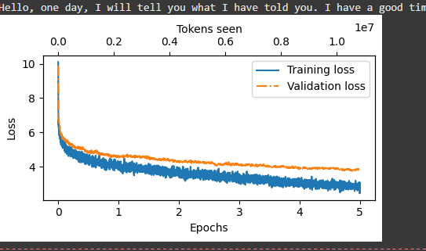

“The lake this morning is like a green star. These leaves are covered with soft hairs, and have a delicate row of bright yellow stalks, which are quite green and hollow. These flowers grow in pairs, and each green buds are a double row of wo-shaped calyx.”
Today, I looked into Colab's options for GPUs. Turns out, they offer some compute units FOR FREE and I was able to fully train a model with 5 epochs on a T4 GPU. I'm happy I was finally able to finish a training session even if it was tiny. I'll speak a little bit more about training later on.
This training was done on the SimplyBooks dataset like we discussed yesterday. It contains a bunch of children's stories I think, possibly with a lot of imagination, so I decided to evaluate it with a metaphorical statement. I entered the prompt "The lake this morning is like a", and it did the rest. It did really well. Everything made logical sense, gramatically. It also displayed impressive contextual awareness to previous sentences, because it was able to was able to continue filling out the lake scene after the sentence was done. Actually that might be a user designed hting and not the model itself, but still. But it handled this task extremely, extremely well. It almost made me briefly think about the difference between human and machine creativity. Our creativity comes from multiple perspectives, drawing perspective from our experiences. For example, if I was writing a story about a lake, and I remember sometimes seeing flowers, and I remember sometime seeing stalks, it would be considered human creativity to combine these experiences into a fictional sentence like the one above. How is that any different than the machine? It also 'saw' some lakes in it's readings, and combined different elements of the lake like the flowers and the stalks in making the sentence. Obviously they will never be able to have an emotional perspective, they won't be able to put weight on certain attributes of a setting based on how it made them feel, like how an artist might depict a sky dromatically red because he was angry that day. But still, in the sense of drawing from multiple different angles (except emotiona), models and humans seem to have similiar 'creative' ability.
Moving forwards, I added the models to hugging face, making sure I'm continuing my open source contributions. I added a link to the hugging face repo and the new model in the llm blog area. Let's now talk about model performance, now that I can explore more since I finally finished a training session. Here was the performance of the latest model.

Nothing new. All models have approached lower and lower losses, although this is definitely a lot more consistent and you can tell the training was done a lot longer compared to the other time I trained it on a fraction of the gutenberg dataset. Although, let's talk about some of the parameters. In the textbook, most hyperparameters were not finely considered because it was purely an educatoinal book. I did some research and learned that there were several things that could be reducing accuracy. Firstly, epochs. I had it at 5. but this was just because I was trying out the GPU for the first time and wanted to see how it work, I increased it to 10 which should be good for a small dataset and not cause overfitting. I adjusted the numbers of heads and the number of layers, as in, the number of heads in the attention mechanisms and the number of layesr the model learns from. The reason is that the dataset is small less than a GB, and passing through that many layers might actualy cause overfitting. Learning rate and decay were also adjusted a little arbitrarily in my opinion, but I can just kinda overfit my own learning for now and assume that wheneber we have a small dataset, adjust those the same way. I increased batch size, now that I'm using a GPU with more compute power. FInally, I increased num workers because I have more compute power.
On some final notes, I direclty put a download line in the script so that the model gets downloaded directly to my computer when training is over, because last time I lost my model due to runtime. I honestly saved v3 from being lost because I happened to come home just as it was finishing training. Anway, right now I'm training v4. It's been only 35 ish minutes and it's already on EP3 out of 10. I don't think I'm going to sleep until it's done just to be careful. But honestly I'm having a lot of fun and learning alot. Next, I'm going to find more ways to analyze besides text generation -- this will allow me to adjust the parameters more knowingly, and also learn a lot more about them to begin with. I also think I should look into fine tuning, one because that's how most models get into professional capacity, as in models after pretraining (what I'm doing now) is proabbly never sufficient to be cnsidered a good model it has to be tuned. I'm also going to start blogging about that voice model project. I'm absolutely loving using the voice models but I hate some aspects of it, like obviously the user restrictions, the fact that it speaks to fast when I need it to give me specific information (lack of canvas). I think I'm definitely going to pursue that as a project.